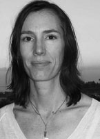

 My work is mostly about color, the language of spirit and emotion. As Picasso once pointed out, there is no abstract art. My work originates in realism, then goes on to have fabulous adventures in places only my mind can see. Overcomplicated art bothers me, so I omit surplus details to focus on essential visual elements and color. I want my art to take the observer somewhere new, a place at once familiar and totally different; an oasis from ordinary.
Much of my imagery is drawn from my love of the natural world and a wish to convey a sense of sanctuary. My urban scenes are deeply colored by a sense of landscape. I focus on natural rhythms of shape and form found in nature, as I feel these patterns create a sense of harmony in composition.
As a third generation artist I was born with a paintbrush in hand. My primary medium is still oil. The smaller paintings are created on location. For larger pieces I prefer to work in my studio. In 2010 I began printmaking with with acrylic paint. It starts with a drawing and much experimentation, so an edition often takes weeks to be complete. Colors are vivid. I use the best pigments so color lasts, and employ painterly techniques. Each print is slightly different within an edition.